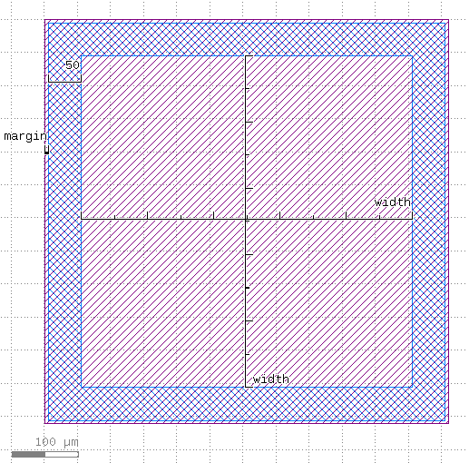
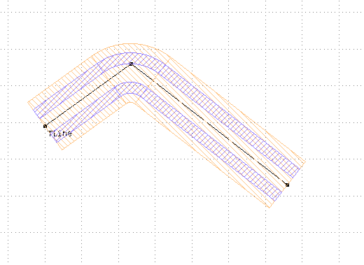
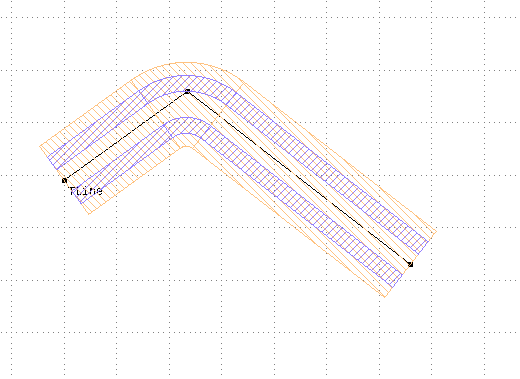

Elements¶
Airbridge¶
Origin is at the geometric center. The airbridge is in vertical direction. There are multiple types of airbridges.
Normal: Bottom parts of pads in bottom layer, bridge and top parts of pads in top layer. Pads and bridge are rectangular. Refpoints “port_a” and “port_b” at top pad points closest to origin.
PCell parameters:airbridge_type (String) - Airbridge type, default=
Airbridge Rectangular, choices=['Airbridge Rectangular']bridge_width (Double) - Bridge width, default=
20, unit=μmpad_length (Double) - Pad length, default=
18, unit=μmbridge_length (Double) - Bridge length (from pad to pad), default=
44, unit=μm
Origin: Center

ChipFrame¶
The chip frame consists of a dicing edge, and labels and markers in the corners.
PCell parameters:box (Shape) - Bounding box of the chip frame, default=
(0,0;10000,10000)with_grid (Boolean) - Make ground plane grid, default=
Falsedice_width (Double) - Dicing width, default=
200, unit=μmdice_grid_margin (Double) - Margin of the ground grid avoidance layer for dicing edge, default=
100name_mask (String) - Name of the mask, default=
M99name_chip (String) - Name of the chip, default=
CTestname_copy (String) - Name of the copy, default=
Nonetext_margin (Double) - Margin of the ground grid avoidance layer around the text, default=
100marker_dist (Double) - Distance of markers from closest edges of the chip face, default=
1500diagonal_squares (Int) - Number of diagonal squares for the markers, default=
10use_face_prefix (Boolean) - Use face prefix for chip name label, default=
Falsemarker_types (List) - Marker type for each chip corner, starting from lower left and going clockwise, default=
['Marker Standard', 'Marker Standard', 'Marker Standard', 'Marker Standard']
Element¶
Base class for all elements.
PCell parameters:a (Double) - Width of center conductor, default=
10, unit=μmb (Double) - Width of gap, default=
6, unit=μmn (Int) - Number of points on turns, default=
64r (Double) - Turn radius, default=
100, unit=μmmargin (Double) - Margin of the protection layer, default=
5, unit=μmface_ids (List) - Chip face IDs, list of b | t | c, default=
['b', 't', 'c']display_name (String) - Name displayed in GUI (empty for default), default=
protect_opposite_face (Boolean) - Add opposite face protection too, default=
False
FingerCapacitorSquare¶
Two ports with reference points. The arm leading to the finger has the same width as fingers. The feedline has the same length as the width of the ground gap around the coupler.
PCell parameters:a2 (Double) - Non-physical value ‘-1’ means that the default size ‘a’ is used., default=
-1, unit=μmb2 (Double) - Non-physical value ‘-1’ means that the default size ‘b’ is used., default=
-1, unit=μmfinger_gap_end (Double) - Gap between the finger and other pad, default=
3, unit=μmground_padding (Double) - Ground plane padding, default=
20, unit=μmfixed_length (Double) - Fixed length of element, 0 for auto-length, default=
0, unit=μmground_gap_ratio (Double) - Ground connection width per gap ratio, default=
0, unit=μma (Double) - Width of center conductor, default=
10, unit=μmb (Double) - Width of gap, default=
6, unit=μmn (Int) - Number of points on turns, default=
64r (Double) - Turn radius, default=
100, unit=μmmargin (Double) - Margin of the protection layer, default=
5, unit=μmface_ids (List) - Chip face IDs, list of b | t | c, default=
['b', 't', 'c']display_name (String) - Name displayed in GUI (empty for default), default=
protect_opposite_face (Boolean) - Add opposite face protection too, default=
Falsefinger_number (Int) - Number of fingers, default=
5finger_width (Double) - Width of a finger, default=
5, unit=μmfinger_gap (Double) - Gap between the fingers, default=
3, unit=μmfinger_length (Double) - Length of the fingers, default=
20, unit=μmcorner_r (Double) - Corner radius, default=
2, unit=μm
Origin: Center

FingerCapacitorTaper¶
Two ports with reference points. Ground plane gap is automatically adjusted to maintain the a/b ratio.
PCell parameters:finger_number (Int) - Number of fingers, default=
5finger_width (Double) - Width of a finger, default=
5, unit=μmfinger_gap (Double) - Gap between the fingers, default=
3, unit=μmfinger_length (Double) - Length of the fingers, default=
20, unit=μmtaper_length (Double) - Length of the taper, default=
60, unit=μmcorner_r (Double) - Corner radius, default=
2, unit=μm
Origin: Center


Flip chip connector Rf¶
Radio frequency connectors for flip-chip
PCell parameters:connector_type (String) - Connector type, default=
Coax, choices=['Single', 'GSG', 'Coax']inter_bump_distance (Double) - Distance between In bumps, default=
100, unit=μmoutput_rotation (Double) - Rotation of output port w.r.t. input port, default=
180, unit=degreesconnector_a (Double) - Conductor width at the connector area, default=
40, unit=μmconnector_b (Double) - Gap width at the connector area, default=
40, unit=μmround_connector (Boolean) - Use round connector shape, default=
Falsen_center_bumps (Int) - Number of center bumps in series, default=
1
TSV connector¶
Through silicon via geometry
PCell parameters:tsv_type (String) - TSV type, default=
Tsv Standard, choices=['Tsv Standard', 'Tsv Ellipse']tsv_diameter (Double) - TSV diameter, default=
100, unit=μm

Manual SQUIDs¶
These SQUIDs are manually drawn and automatically loaded from a library file. SQUIDs are referred to by the Cell name in the library file.


Launcher¶
Launcher for connecting wirebonds. Default wirebond direction to west,
waveguide to east. Uses default ratio a and b for scaling the
gap. Taper length is from waveguide port to the rectangular part of
the launcher pad. Pad width is also used for the length of the launcher pad.
s (Double) - Pad width, default=
300, unit=μml (Double) - Tapering length, default=
300, unit=μma_launcher (Double) - Outer trace width, default=
240, unit=μmb_launcher (Double) - Outer gap width, default=
144, unit=μm
Origin: Waveguide port

LauncherDC¶
DC launcher for connecting wirebonds.
PCell parameters:width (Double) - Pad width, default=
500, unit=μm
Origin: center
Marker¶
MaskMarkerFc¶
PCell parameters:window (Boolean) - Window in airbridge flyover and UBM layer, default=
Falsearrow_number (Int) - Number of arrow pairs in the marker, default=
3
Meander¶
Defined by two points, total length and number of meanders. Uses the same bending radius as the underling waveguide. Each perpendicular segment is a meander.
PCell parameters:start (Shape) - Start, default=
-600,0end (Shape) - End, default=
600,0length (Double) - Length, default=
3000, unit=μmmeanders (Int) - Number of meanders (non-positive means automatic), default=
-1n_bridges (Int) - Number of bridges, default=
0
Origin: absolute position of start
Swissmon¶
Swissmon type qubit. Each arm (West, North, East, South) has it’s own arm
gap width (gap_width) and arm metal width (arm_width).
SQUID is loaded from another library. Option of having fluxline.
Refpoints for 3 couplers, fluxline position and chargeline position.
Length between the ports is from waveguide port to the rectangular part of the launcher pad.
Length of the fingers is also used for the length of the launcher pad.
arm_length (List) - Arm length (um, WNES)), default=
[150.0, 150.0, 150.0, 150.0]arm_width (List) - Arm metal width (um, WNES), default=
[24, 24, 24, 24]gap_width (List) - Arm gap width (um, WNES), default=
[12, 12, 12, 12]cpl_width (List) - Coupler width (um, WNE), default=
[24, 24, 24]cpl_length (List) - Coupler lengths (um, WNE), default=
[120, 120, 120]cpl_gap (List) - Coupler gap (um, WNE), default=
[102, 102, 102]port_width (List) - Port width (um, WNE), default=
[10, 10, 10]cl_offset (List) - Chargeline offset (um, um), default=
[200, 200]island_r (Double) - Center island rounding radius, default=
5, unit=μm
Origin: Center of the cross.

WaveguideCoplanar¶
Coplanar waveguide defined by the width of the center conductor and gap. It can follow any segmented lines with predefined bending radius. It actually consists of straight and curved PCells. Termination lengths are lengths of extra ground gaps for opened transmission lines
Warning Arbitrary angle bents actually have very small gaps between bends and straight segments due to precision of arithmetic. To be fixed in a future release.
Parameters:
PCell parameters:path (Shape) - TLine, default=
(0,0;100,0) w=0 bx=0 ex=0 r=falseterm1 (Double) - Termination length start, default=
0, unit=μmterm2 (Double) - Termination length end, default=
0, unit=μmcorner_safety_overlap (Double) - Extend straight sections near corners by this amount [μm] to ensure all sections overlap, default=
0.001, unit=μm
Origin: One port or follows the absolute coordinates of the path.
 

WaveguideCoplanarCurved¶
PCell parameters:alpha (Double) - Curve angle (rad), default=
3.141592653589793length (Double) - Actual length, default=
0, unit=μm
WaveguideCoplanarTaper¶
PCell parameters:taper_length (Double) - Taper length, default=
31.41592653589793, unit=μma1 (Double) - Width of left waveguide center conductor, default=
10, unit=μmb1 (Double) - Width of left waveguide gap, default=
6, unit=μmm1 (Double) - Margin of left waveguide protection layer, default=
5, unit=μma2 (Double) - Width of right waveguide center conductor, default=
20, unit=μmb2 (Double) - Width of right waveguide gap, default=
12, unit=μmm2 (Double) - Margin of right waveguide protection layer, default=
10, unit=μm

WaveguideCoplanarTCross¶
PCell parameters:a2 (Double) - Width of the side waveguide, default=
10b2 (Double) - Gap of the side waveguide, default=
6length_extra (Double) - Extra length, default=
0length_extra_side (Double) - Extra length of the side waveguide, default=
0use_airbridges (Boolean) - Use airbridges at a distance from the centre, default=
Falsebridge_distance (Double) - Bridges distance from centre, default=
80airbridge_type (String) - Airbridge type, default=
Airbridge Rectangular, choices=['Airbridge Rectangular']